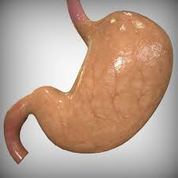

आमाशय

आमाशय अधिकांश जीव जंतुओं के शरीर का आवश्यक अंग हैं। इस लेख में मानव आमाशय से संबंधित उल्लेख है। आमाशय उदरगुहा में बाईं ओर डायाफ्राम के ठीक पीछे स्थित होता है। यह आहारनाल का सबसे अधिक चौड़ा तथा पेशीय भाग होता है। आमाशय को तीन भागों में बाँटा जा सकता है-
- बायाँ बड़ा भाग कार्डियक भाग
- दाहिना छोटा पायलोरिक भाग
- दोनों के मध्य का फंडिक भाग
आमाशय की भित्तियों में जठर ग्रन्थिया पाई जाती हैं। इनसे स्रावित जठर रस भोजन के पाचन में सहायता करता है।